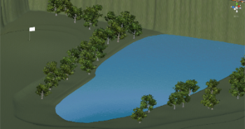

Unityで実装した3Dゴルフゲーム．
自分でゴルフをプレイするモードと，AIプレイヤーが遺伝的アルゴリズムでホールインワンに挑戦するGA（Genetic Algorithm：遺伝的アルゴリズム）モードがある．
まず，Unityでオブジェクトを配置し，画像のような地形を作成した．
さらに，Unityの標準機能からボールの重さや地面の摩擦等を設定を行う．

続いてゴルフゲームの実装を行う．
ゴルフゲームの大まかなアルゴリズムは以下の通りである．
遺伝的アルゴリズムとは，生物の進化の仕組みを再現することにより近似解を求める進化型計算アルゴリズムである．
遺伝的アルゴリズムでは，遺伝子（個体）とその評価方法を定義し，交叉や突然変異などの操作を繰り返すことによって優秀な（評価値が高い）個体を生成していく．
本作品では，以下のように設定する．
アルゴリズムは以下の通りである．
遺伝的アルゴリズムによって学習が進む様子を観察したいと思い，制作に至りました．
ライブラリなしで遺伝的アルゴリズムを実装し，さらにゲームと組み合わせることは大変でしたが，やりたいと思っていたことを実現できました．